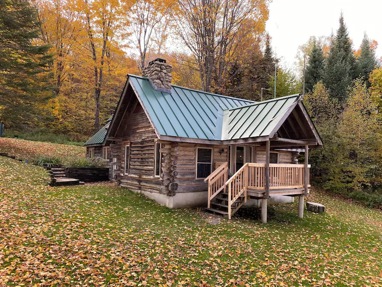
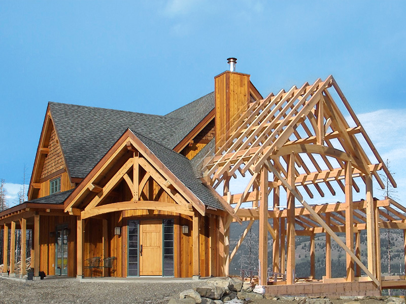
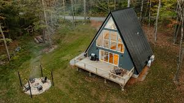
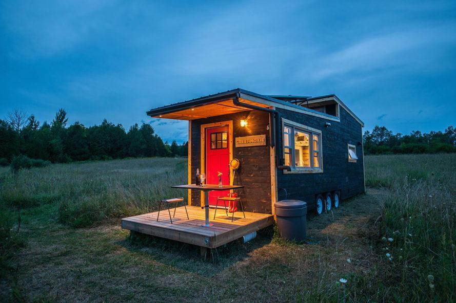
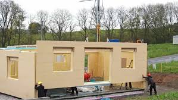
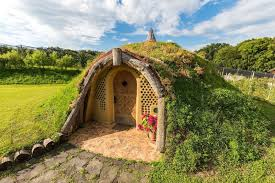
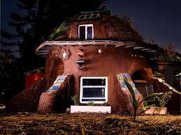
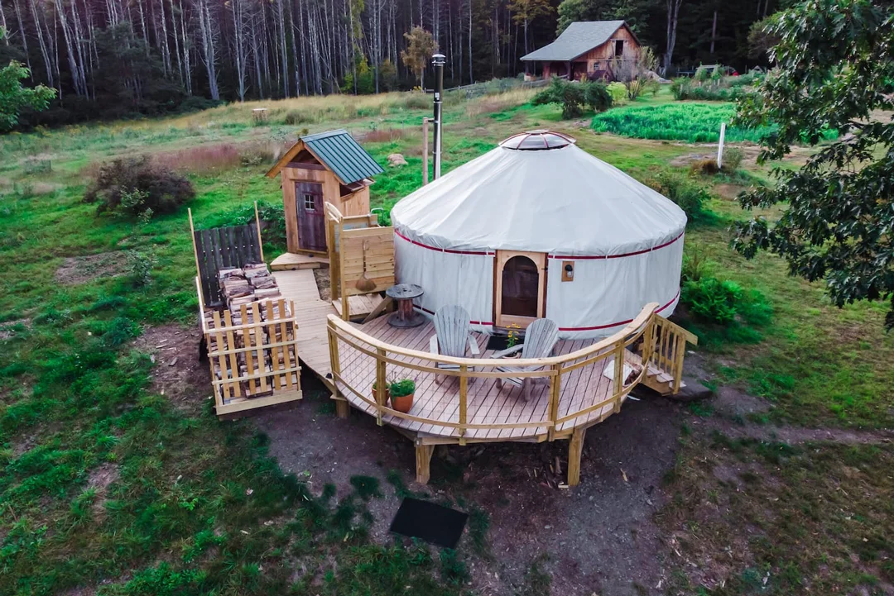

Shelter Options
Chosing the right structure is one of the first and mainsteps to self-sufficiency. From log cabins, to mud huts, the options vary based on your wants needs and enviroment.
Log Cabins
The Why: People choose this for natural thermal mass. Thick logs absorb heat during the day and radiate it back at night, which is a massive win for energy efficiency in cold climates.
The How: You stack debarked logs and use chinking to fill the gaps. The main engineering challenge is accounting for the wood shrinking and the house settling over the first few years.

Timber Frames
The Why: This is chosen for extreme durability and design flexibility. It uses a heavy skeleton that doesn't need load-bearing interior walls, allowing for huge, open off-grid living spaces.
The How: It is built using mortise and tenon joinery secured with wooden pegs. Usually, the frame is wrapped in SIPs to create a high-performance, airtight seal.

A-Frames
The Why: The main reason is snow management. The steep roof pitch ensures heavy snow slides right off, preventing roof collapses in alpine or high-latitude areas.
The How: You build a series of triangular rafters that serve as both the walls and the roof. It’s one of the easiest shapes to frame up quickly with minimal help.

Tiny Homes
The Why: Mobility and cost. Many off-gridders use these to bypass permanent building codes or to have the freedom to move their entire setup if their resource needs change.
The How: Most are built on a heavy-duty trailer chassis. They use standard stick framing but require specialized hurricane straps to handle the vibration and wind of being towed.

Pre-Fab
The Why: Logistics and quality control. When your site is hours away from a hardware store, having a house built to exact specs in a factory prevents missing part disasters.
The How: The house is manufactured in modules or panels and trucked to the site. A crane or a small crew assembles the envolope in a few days, ensuring the insulation is perfectly sealed.

Shipping Containers
The Why: High security and fire resistance. If the home sits empty for part of the year, you can lock the steel doors for a nearly break in proof fortress.
The How: You cut out openings for windows and doors using a torch. You must use closed-cell spray foam insulation on the interior; otherwise, the steel creates massive condensation and rust issues.

Earth-Bermed
The Why: Passive temperature regulation. By using the earth as a thermal blanket, the house stays close to a constant 55°F year-round, drastically reducing the power needed for heating and cooling.
The How: You build into a hillside or push dirt against three sides of the structure. It requires heavy-duty concrete reinforcement and industrial-grade waterproofing to prevent leaks.

Earth Bag
The Why: It is incredibly cheap and uses local materials. It’s also fireproof and can withstand extreme weather better than wood-frame houses.
The How: You fill polypropylene bags with a soil/clay mix, stack them in layers, and run barbed wire between the rows to act as mortor. Then you plaster it to protect the bags from UV damage.

Yurt
The Why: Portability and space-to-weight ratio. You get a massive amount of interior volume that can be heated quickly with a small wood stove, and you can pack the whole thing up in a day.
The How: A circular wooden lattice wall is held under tension by a steel cable. A heavy-duty fabric cover is stretched over the top, making the entire structure stable through tension and compression.
